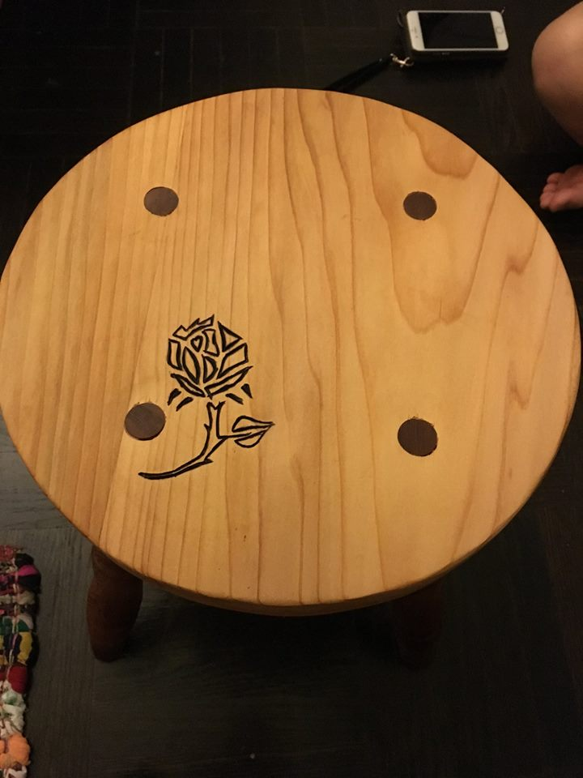
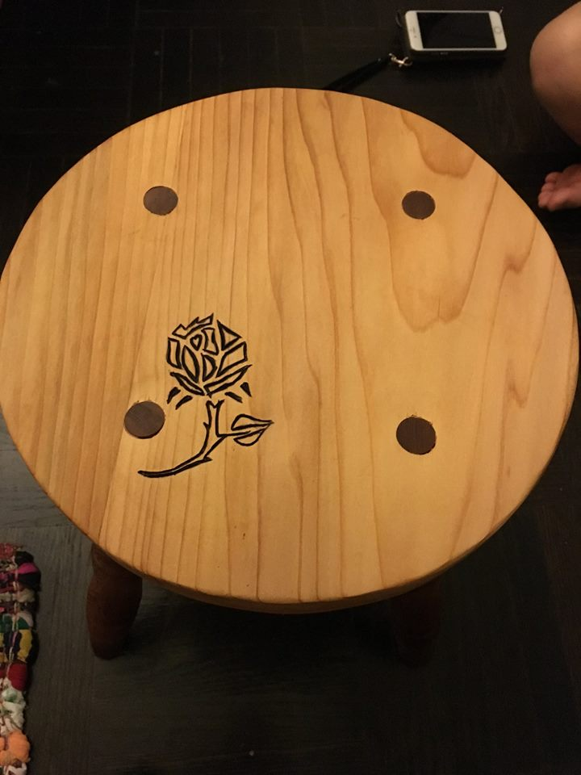

Overview
I have been involved in woodworking in my spare time. My current goal is to build a windsor chair or rocking chair from found or self-chopped wood.
Cedar Stool
I made this stool from red cedar. The legs and supports are from a fingle 4X4 that was lying around from a previous project and the seat is a cut and glued from a 2X4. I then drew and wood burned the rose design. The last photo is post oiling.

 

Here is a before and after of a black walnut sapling I turned into a stool leg.